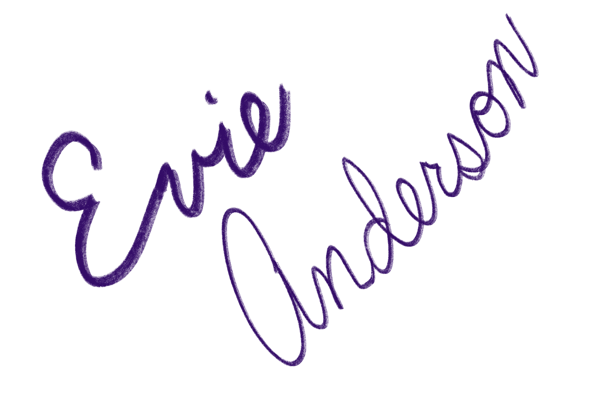

Bio
I am a software engineer, copyeditor, and proofreader based in Philadelphia, PA. Though my work in computing focuses on low-level, system programming, I am comfortable at many different levels of abstraction. My work as a copyeditor and a proofreader is intimately linked to my programming practice: the same attention to detail that helps me debug a socket program written in C helps me to catch errors that every previous reader missed.
